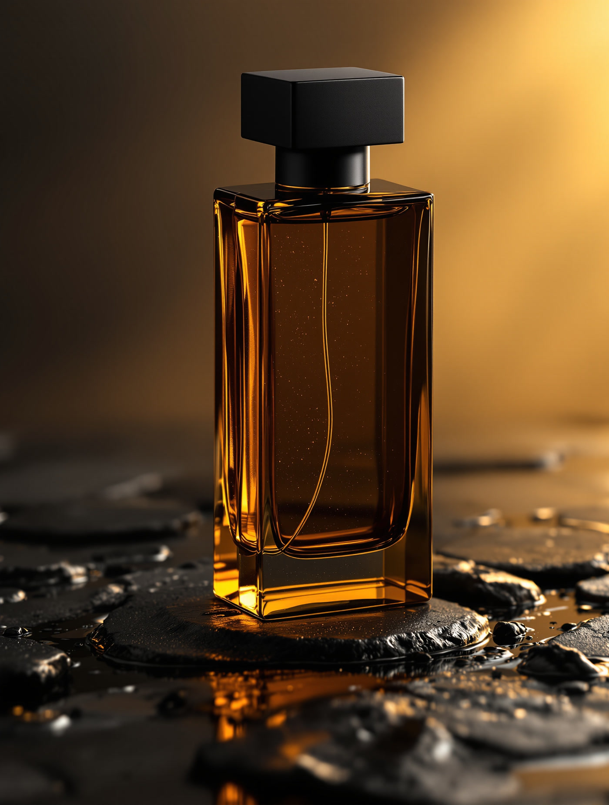
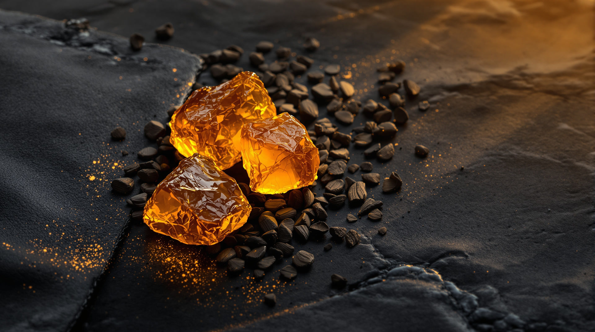
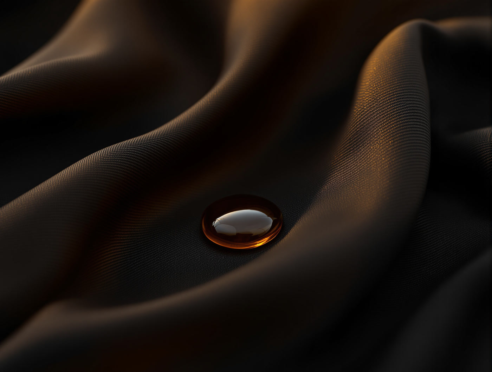

ARDIN, sen çıktıktan sonra konuşan koku
01 / İZ
Bu, tene iner.
Oud, amber, deri.
Ekstre parfüm / 50 ml
Sen çıktıktan sonra konuşan koku.
ARDIN. Oud, amber ve deri. Gece için yazılmış bir parça.
Şişeyi görKoku, sen gittikten sonra konuşur.
Bir parfümün işi, sen odadayken değil, sen odadan çıktıktan sonra başlar. Kapı kapanır, sen yoksun, koku hâlâ orada. ARDIN bunun için yazıldı.

Bilek testi
Parmağını basılı tut. Koku tende nasıl açılıyorsa öyle açılır.
Düğmeyi basılı tutunca kokunun üç aşaması sırayla açılır. Bırakınca geri kapanır.
İlk 15 dakika
Bergamot, karabiber, tarçın kabuğu.
İkinci saat
Oud, tütsü, kuru gül.
Sekizinci saatten sonra
Amber, deri, sedir.

Yarım saatte uçmaz.
Ekstre yoğunluğu yüzde 24. Oud, amber ve deri, tene tutunan üç notadır. Ölçtüğümüz aralık tende 8 ila 12 saat, kumaşta daha uzun.

Ekrandan koku alınmıyor. Biliyoruz.
O yüzden önce 2 ml deneme şişesi gönderiyoruz. Beğenmezsen büyük şişeyi hiç açmadan geri gönder, parası iade edilir. Risk bizde kalsın.
Sorular
Bize en çok sorulanlar ve dosdoğru cevapları. Süslemedik.
01Tende herkeste aynı mı kokuyor?
Hayır. Amber ve deri ten ısısına göre değişir. Bu yüzden 2 ml deneme şişesini önce göndeririz.
02Ağır bir koku mu?
Yakın mesafede yoğun, uzakta yumuşak. İki sıkım günlük kullanım için yeter, dört sıkım gece içindir.
03Kışlık mı, yazlık mı?
Soğukta daha uzun tutar. Yazın akşam saatleri için iki sıkım yeterli.
04Kutusu açılmışsa iade alınıyor mu?
Deneme şişesi zaten senin. Büyük şişe açılmadıysa 14 gün içinde iade alınır.
05Kaç yıl dayanır?
Işık almayan serin bir yerde 5 yıl. Kutusunda sakla, banyoda değil.
Arkanda ne bıraktığın senin seçimin.
50 ml ekstre. Yanında 2 ml deneme şişesi.
Buton WhatsApp'ı hazır mesajla açar. Türkiye içi kargo bizden, 14 gün iade.